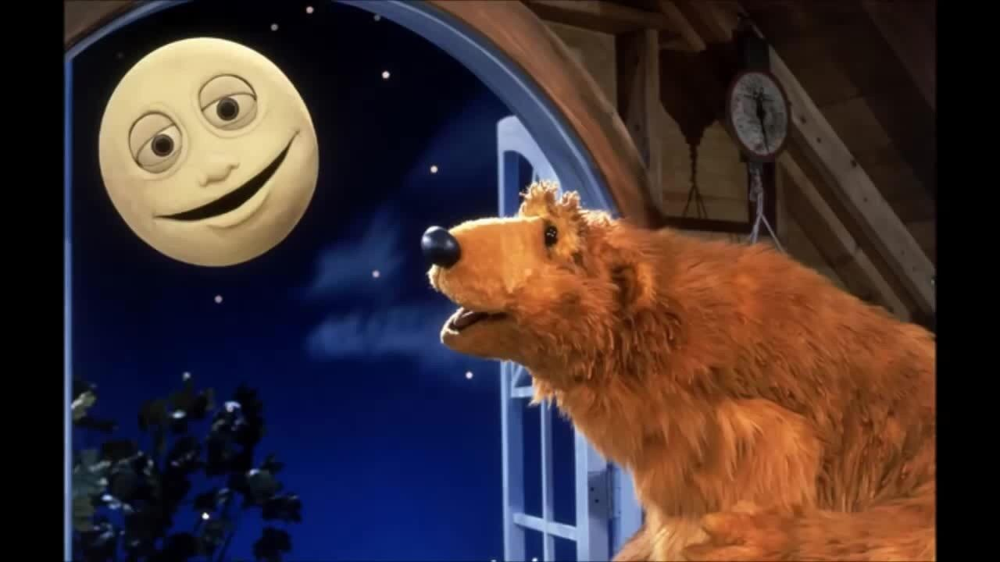

My favorite shows!

Bear and the Big Blue House
Bear and the Big Blue House is one of my favorite shows! It was filmed from 1997 to 2003. My favorite characters are Bear, Tutter, Treelo and Shadow! I like it when Luna and Bear sing the "Goodbye" song at the end.
